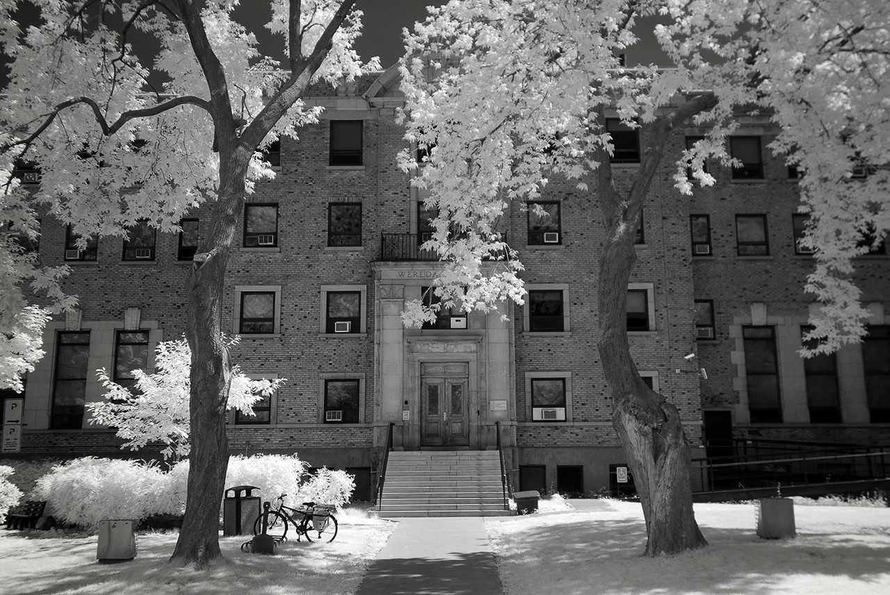

physical
photography/
illustration
software
macro
personal
film
black
infrared/
travel
09P06 — Habitat 67
The Infrared photographs were taken with a modified Nikon camera.
09P02 — Graveyard
09M11 — Rekka and Sunglasses
07M09 — Soldat
07M06 — Infrared Set 2
07A00 — Tokyo Infrared II
06X09 — Tokyo Infrared

06P10 — Wereda
incoming(1)
:
black
Last update on
09P06
, edited 13 times. +90/76fh
stub
-|||--